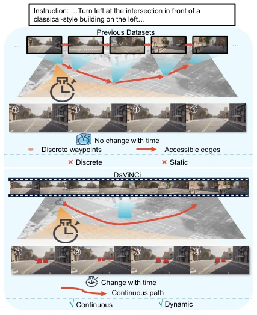
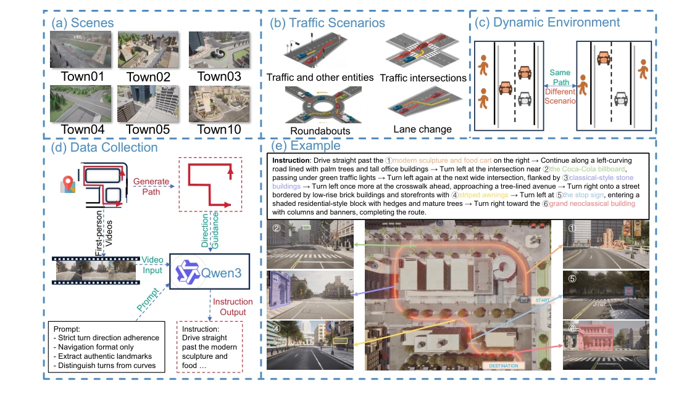
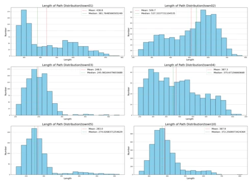
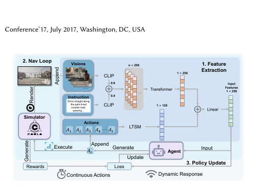

This DaViNCi paper is somewhat of a cold shower for outdoor VLN. Although claimed as the first continuous and dynamic dataset, essentially it still runs NPCs within CARLA, still far from the complex traffic flow of the real world. The authors tore down the discrete graph to redo it, creating continuous trajectories; this direction is correct, after all, real cars don't just stop at intersections. However, regarding generating instructions using VLM, although human fine-tuning was added, who is responsible for the hallucination risk of the instructions? In experiments, the success rate in continuous environments plummeted, indicating that existing methods are basically like blind men touching an elephant in continuous dynamic spaces. The dataset scale is 6k trajectories, slightly less than Touchdown's 9k, but wins in quality. Overall, this is a good benchmark, but do not expect it to directly solve the last mile of sim-to-real, after all CARLA's dynamics are still too idealized, and generalization ability to unseen scenes is weak, with model performance on unseen maps declining significantly.
Outdoor VLN has long been trapped by fake dynamics and fake continuity. Existing mainstream outdoor datasets such as Touchdown [3] and Talk2Nav [22] rely on fixed discrete topology graphs, simplifying navigation to node jumps, ignoring the continuity of real vehicle motion. Although indoor VLN has shifted to continuous environments like VLN-CE [11], outdoor scenes are more complex, involving traffic rules and real-time interaction. Existing data is static and discrete, causing models to be unable to handle real-time changing traffic flows such as pedestrians and vehicles, severely hindering sim-to-real transfer. The authors point out that this fixed assumption obscures specific traffic rules, and visual information remains unchanged over time, which does not conform to the real world. Therefore, it is necessary to build an outdoor VLN dataset that can reflect real dynamics and continuous actions, to promote the navigation ability of agents in complex open environments, fill the gap in existing research in dynamic continuous environments, and solve the pain point that existing methods cannot adapt to real traffic changes.

Figure 1: Comparison between DaViNCi and previous datasets. Unlike previous ones, it possesses continuous and dynamic properties
The overall process is built based on the CARLA simulator [7]. First, continuous real trajectories are generated by tracking autonomous vehicles, covering 6 maps with a total of 6,933 paths. Instruction generation adopts a two-stage framework: first extract turning events based on trajectories as prior constraints, then combine with VLM for visual semantic generation, finally human fine-tuning to ensure logical consistency. Visual input is no longer pre-stored panoramic images, but first-person RGB images rendered in real-time during navigation, ensuring dynamism. The experimental environment introduces random vehicles and pedestrians as dynamic elements. For continuous actions, the COVL-RL baseline framework is proposed, adopting an RL paradigm, inputting global instructions, current visual observations, and historical trajectory context, outputting continuous actions such as turning, lane changing, and stopping. This framework supports dynamic response, adapting to environmental changes through policy learning, solving the problem that traditional discrete methods cannot directly adapt to continuous dynamic environments. The architecture includes feature extraction navigation loops and policy updates, utilizing LSTM to process historical context, Transformer to process visual features, and finally outputting action probabilities through a linear layer.

Figure 2: Overview of DaViNCi. (a) Several representative scenarios employed in the dataset. (b) Traffic scenarios that the agent vehicle may encounter during navigation . (c) The dynamic characteristics of the experimental environment . (d) The methodology for data collection and annotation. (e) A representative example demonstrating the alignment between textual and visual information.
Experiments are separated into discrete and continuous parts. Under discrete settings, after discretizing DaViNCi, existing models were tested, finding success rates dropped by over 10% compared to Touchdown etc., proving the challenge. Under continuous settings, the COVL-RL baseline is used, metrics include ANE, SR, APC. Results show that as dynamic elements increase from 0 to 30 vehicles/pedestrians, task completion performance significantly declines, verifying the impact of dynamic obstacles on the visual field. Different action granularities 3m/4m/5m have a non-linear impact on performance; fine granularity has more information but more steps, coarse granularity is the opposite. Generalization ability to unseen scenes is weak. Overall indicates that continuous dynamic environments pose higher requirements for VLN, existing methods need improvement. Specifically SR in town10 is only 18.2%, far lower than discrete environments. Random strategies can hardly complete tasks, proving baseline effectiveness.

Figure 3: Statistics of Path Length. The distribution of path lengths is displayed across different maps. The red line repre- sents the average, while the green line represents the median.

Figure 5: COVL-RL Architecture. (1) Feature extraction and content integration of input content. (2) Navigation loop for each path. (3) Policy update process of the agent.